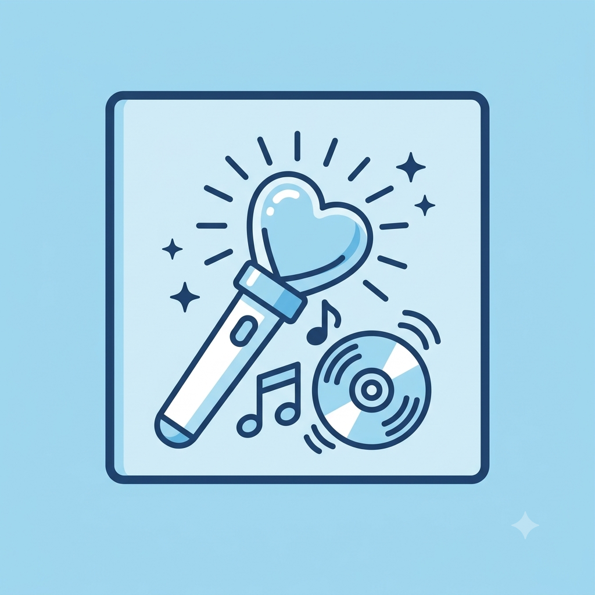
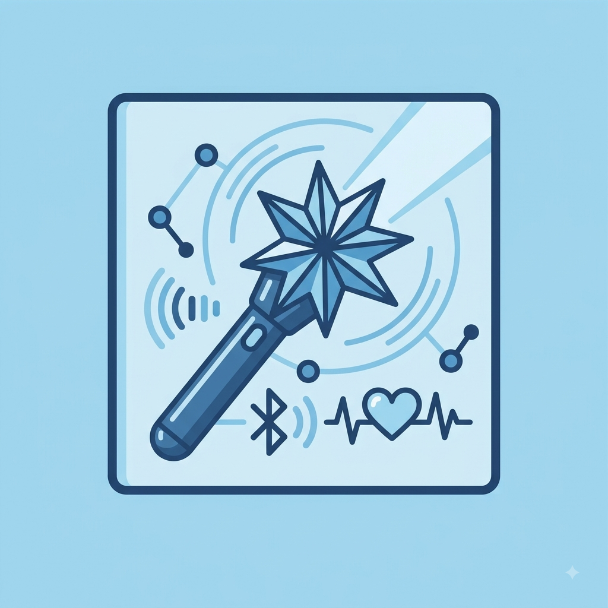
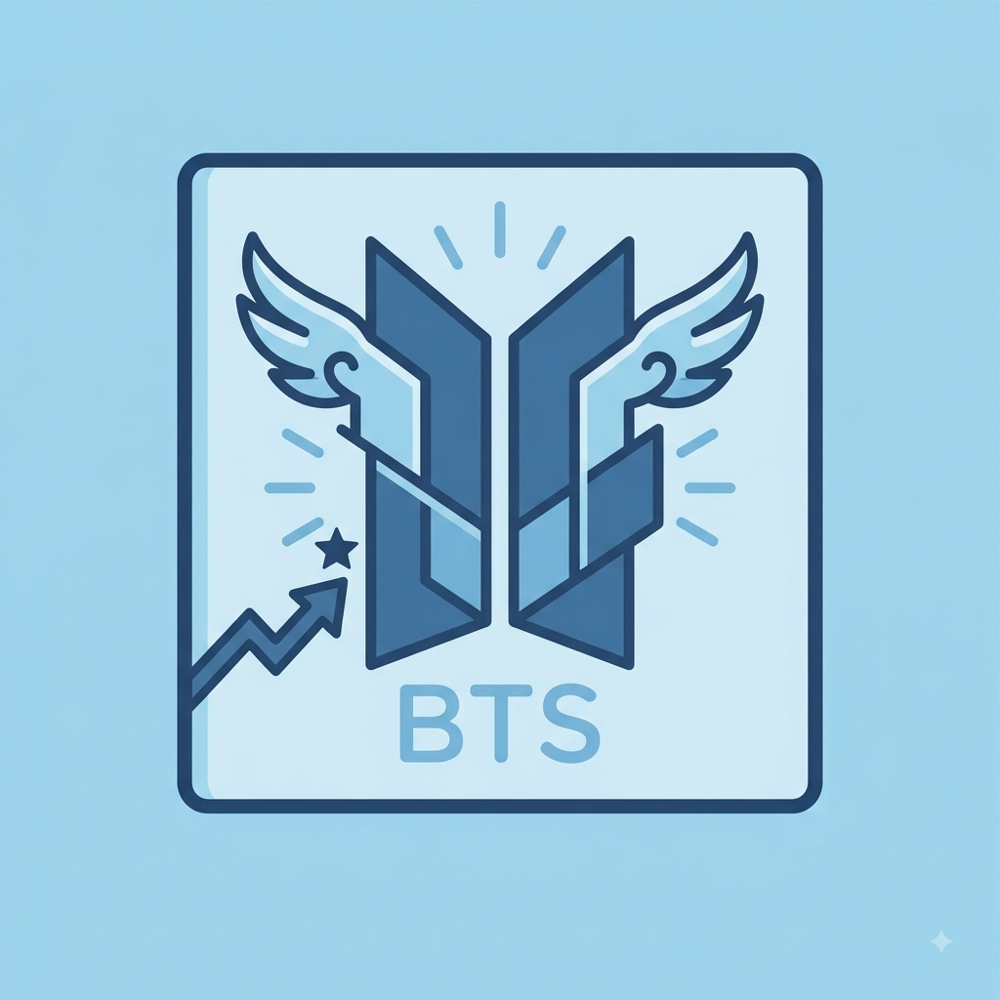
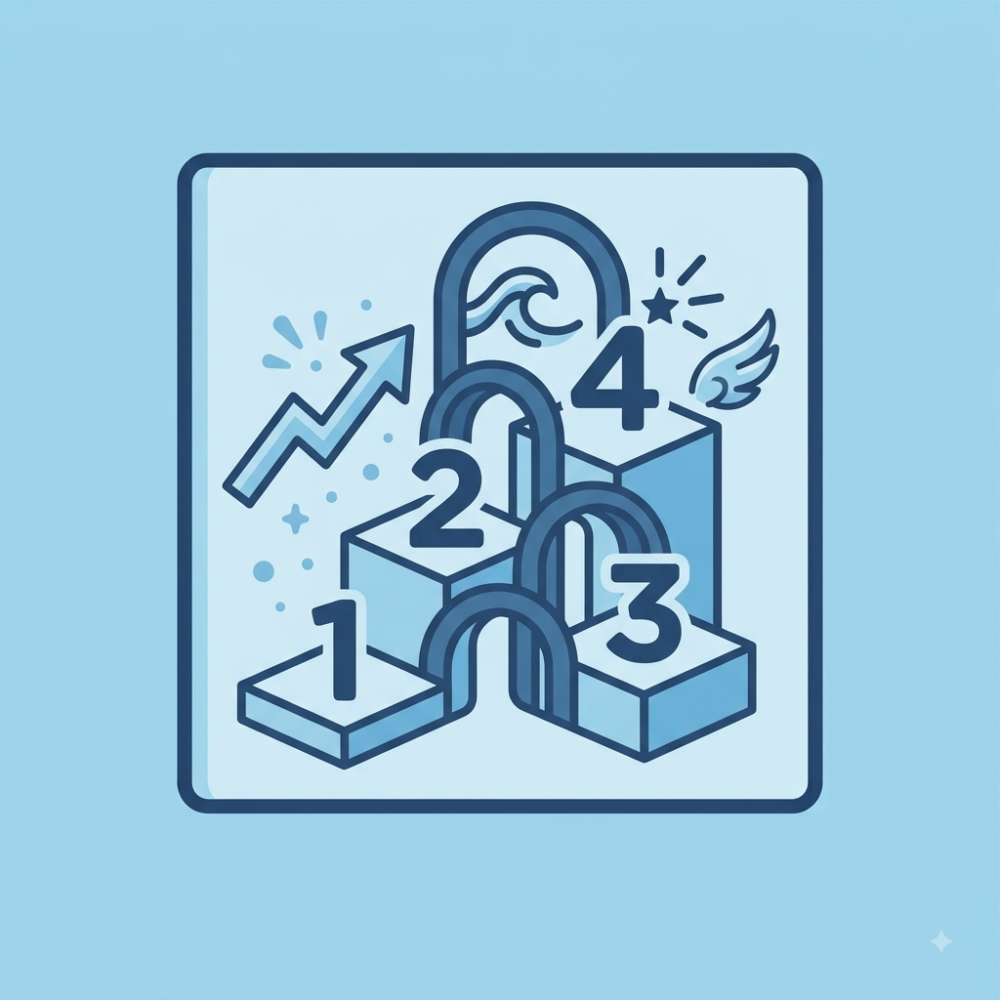
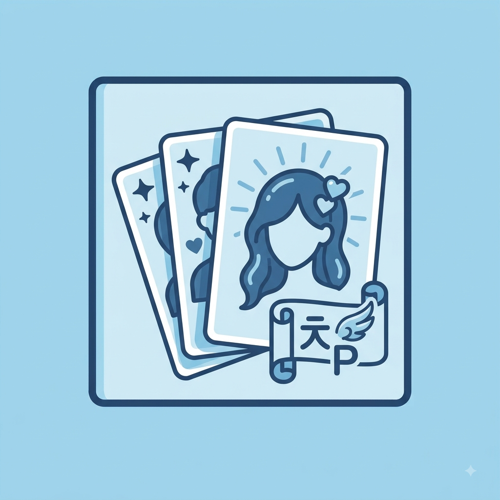
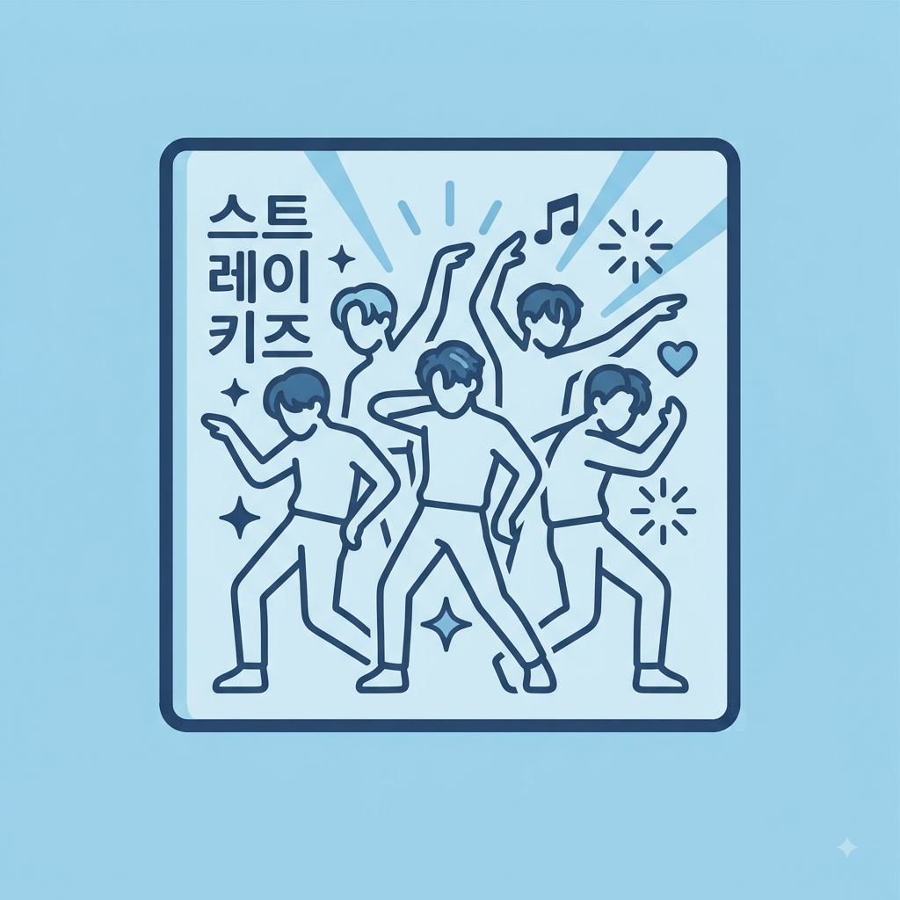

Bem-vindos ao K-Pop Universe!
Por: Giovanna
Boas-vindas ao meu blog! Aqui vou compartilhar curiosidades, lançamentos e tudo sobre os melhores grupos da música pop coreana.
Tudo sobre o mundo do K-Pop, novidades, curiosidades e grupos incríveis!

Por: Giovanna
Boas-vindas ao meu blog! Aqui vou compartilhar curiosidades, lançamentos e tudo sobre os melhores grupos da música pop coreana.

Por: Giovanna
Muito mais do que bastões de luz, os lightsticks possuem design único para cada grupo e conectam o fandom aos shows via Bluetooth!
Fonte: K-POP Official

Por: Giovanna
Acelerando o movimento Hallyu, o BTS quebrou recordes mundiais e levou a música em coreano para o topo das paradas da Billboard.
Fonte: Billboard

Por: Giovanna
O K-Pop é dividido em eras ou gerações. Atualmente vivemos a transição entre a 4ª e 5ª geração com conceitos super modernos!
Fonte: Soompi

Por: Giovanna
Presentes dentro dos álbuns físicos, os fotocards viraram itens de colecionador extremamente valiosos no mundo todo.
Fonte: Koreaboo

Por: Giovanna
Nos grupos de K-Pop, cada membro tem posições definidas, como Main Vocal, Lead Dancer, Maknae, Visual e Center!
Fonte: Allkpop